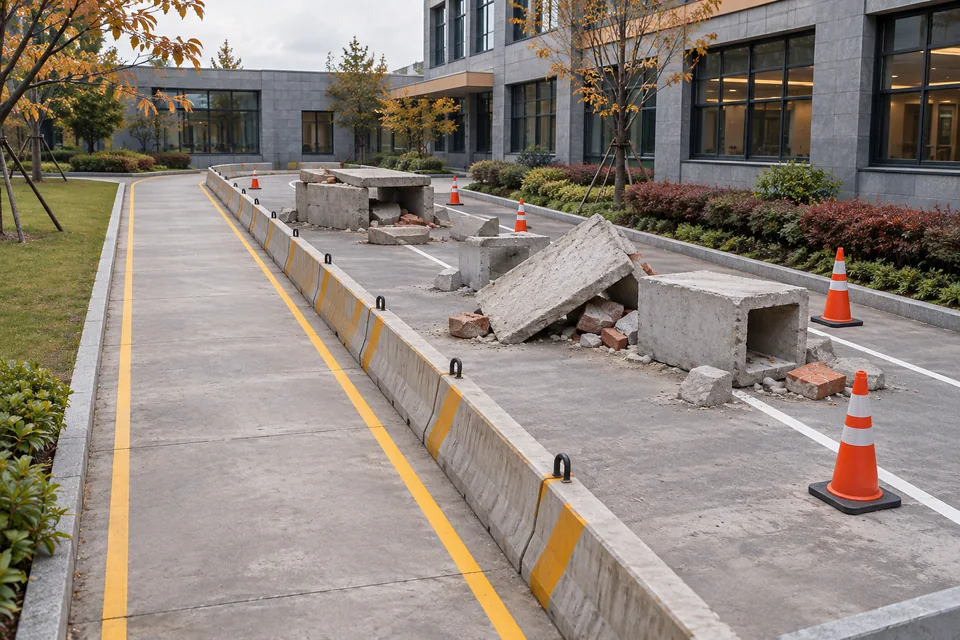

走主通道，完成 A 和 B
观测更新与地图一致，两个点位之间的主通道可用。
- 响应
- 依次检查 A、B 并记录通行情况。
- 留证
- 两个点位各生成一条带时间戳的记录。
SYSTEMS ENGINEERING / 2026 · 小组作业 1
一辆巡检车在模拟震后场地里遇到通道阻断。它如何根据新观测调整行动，又在什么情况下应停下来等人复核？
课程原选题为「基于具身智能的无人作战系统」。本页以无武装、人工监督的震后通道巡检为课程仿真案例。
进入场景推演
沿课程要求逐层分解。向下分配职责与约束，向上汇总状态和证据。第 4 层是本组重点分析的系统。
检查模拟震后场地的两处通道点位，为救援班组提供一份可复核的通行报告。
向体系交付 · A、B 点位、许可区域和验收要求。由应急指挥台、巡检车、固定观测站及救援班组组成。观测站独立记录现场，指挥台分配任务，班组核对证据。
向整机下达 · 巡检范围、通行约束和停止条件。低速轮式巡检车集成底盘、电池、计算单元、相机和测距传感器。车体的位置和朝向决定下一帧能观察到哪里。
向系统提供 · 车体状态、传感数据与底盘接口。根据当前观测更新通行判断，在许可区域内执行巡检或停驻，并形成可由人员核对的事件记录。
向子系统分配 · 感知、决策、执行、安全和报告职责。感知与定位、语义记录、路线规划、运动控制、安全监督、人机交互与数据管理分工协作。
向模块分配 · 输入输出、数据有效性和异常状态约定。相机采集、定位融合、栅格更新、证据索引、路线检查、底盘接口、急停与日志回放等模块承接具体功能。
向上回传 · 带时间戳的观测、停驻事件和复核证据。一条可追踪的证据链“报告 B 点是否可达”从任务进入指挥台，再由巡检车的路线规划子系统检查通行区域。结果连同地图版本和事件记录返回班组，用于复核报告结论。
切换工况，比较相同任务在正常、受阻、定位异常和人工急停时的预期表现。路线和覆盖数是课堂推演示例。
观测更新与地图一致，两个点位之间的主通道可用。
检查完 A 后发现主通道受阻。图中旁路已预先批准，且当前观测支持通行。
A 点记录完成后，定位质量标记变为无效。
操作员在巡检车到达 A 点前发出急停请求。

一条通道放置模拟碎块，另一条保持通畅。是否能走旁路，还取决于任务授权与当前观测。此处为 AI 生成场景概念图。
巡检车运动后，视角、遮挡和测距读数会变。闭环的关键是用新观测修正下一步行动，并把停车或继续的依据保留下来。
反馈回到感知 · 新读数进入下一轮。定位无效、通信中断或人工急停时，安全监督可独立要求停驻。
位姿、通行图和事件统一引用场景坐标系，记录时间戳与地图版本。接收方可以据此识别数据陈旧或版本不匹配。
允许在已批准范围内调整路线，可减少常见阻断造成的中断。证据不充分时优先停驻，代价是覆盖率可能下降，报告需明确说明原因。
每条需求对应一个承担职责的子系统、一个仿真用例和一条可判定的通过条件。下表是验证计划，页面中的推演结果为预期状态。
窄屏可左右滑动查看完整矩阵。
| 需求 | 责任子系统 | 仿真用例 | 通过条件及证据 |
|---|---|---|---|
| R01 · 点位覆盖 | 路线规划、语义记录 | T01主通道正常 | A、B 均完成检查。点位报告各有一条可检索记录。 |
| R02 · 阻断响应 | 感知与定位、路线规划 | T02主路受阻，分别测试旁路可用与不可用 | 路线始终在许可区内且避开受阻段。旁路不可用时记录 B 未覆盖，地图与路线事件可回放。 |
| R03 · 异常停驻 | 安全监督、运动控制 | T03分别注入定位无效和通信中断 | 故障后进入停驻，恢复信号后无未授权前进。日志提供故障与停驻时间，可计算响应耗时。 |
| R04 · 人工急停 | 安全监督、人机交互 | T04移动期间触发急停 | 急停优先于巡检，解除后仍待授权。日志可核对急停、停驻、重新授权的顺序。 |
| R05 · 报告可复核 | 语义记录、数据管理 | T05抽查覆盖和未覆盖报告项 | 每项含点位 ID、结论、时间和证据索引。未覆盖项说明原因，索引能定位源记录。 |
怎样读测试结果覆盖率为已完成检查的点位数除以计划点位数。停驻响应时间为日志中停驻时刻减去故障或急停的触发时刻。报告同时保留未覆盖原因，以区分任务中断与报告漏项。
复用同一份任务配置和场景地图，逐一改变故障条件。按用例保留地图版本、事件顺序和通过判定。
请扮演救援班组的同学仅凭报告判断 A、B 的检查情况，并回溯至少一条证据。记录误解和缺失信息，用于修改报告结构。
需求编号和验证矩阵的组织参考 NASA《系统工程手册》附录 D、E。查看方法参考